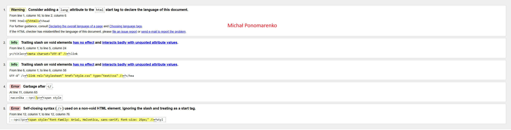
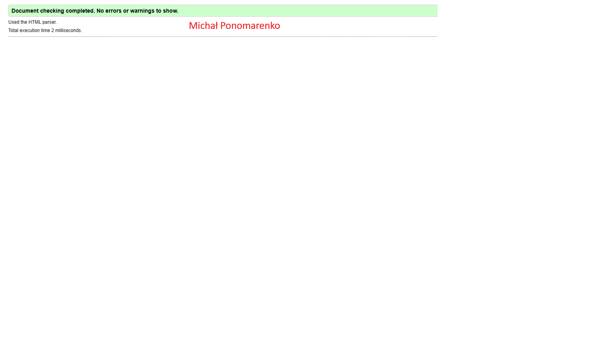

Definicja Walidatora HTML:
Walidator HTML to narzedzie służące do sprawdzenia poprawnośći składnio HTML, zgodnie z obowiązującymi standardami
Definicja Walidatora CSS:
Walidator CSS spraawdza poprawność składni arkuszy stylów CSS i wykrywa błędy zgodnie ze specyfikacją CSS

